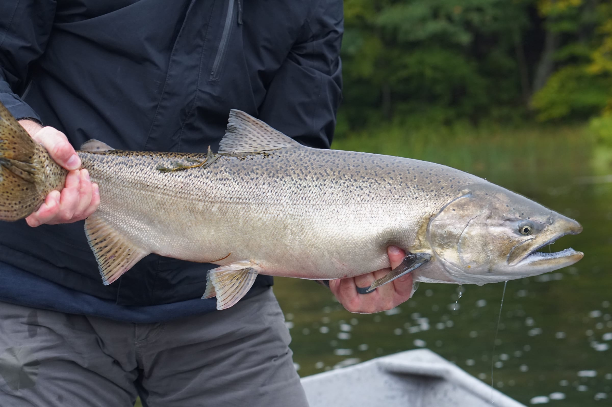
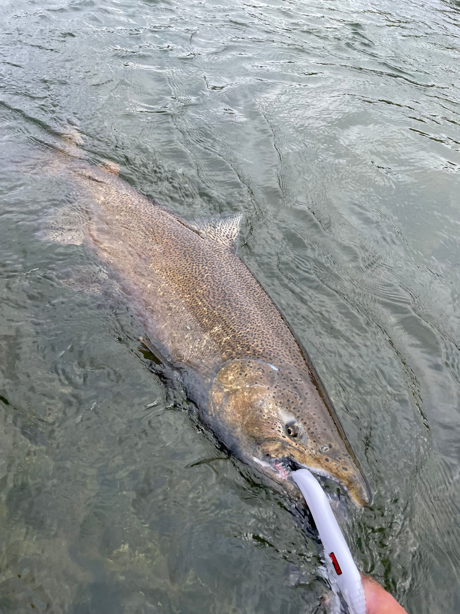

Late Summer – Fall · Jet Boat
King and coho on the Manistee.
Michigan's famed Manistee River, a jet boat that can go where the fish are, and bait cured the way it needs to be cured. When the run is in, this is the heaviest fishing of the year.
Full day $495 · half day $375 · up to 2 anglers
The Trip
Built around staying on fish.
At Grateful Guide Service I also specialize in guided salmon fishing on the stunning Manistee River. The commitment to making it a good day starts with using top-of-the-line gear and meticulously cured bait to keep you on the fish.
The jet boat matters more than people expect. It lets us move quickly and efficiently through the river, which means when a hole gets crowded or the fish move, we move too. Over a full day that is the difference between fishing and waiting.
Fishermen of all ages and skill sets can enjoy the thrill of catching salmon on the Manistee — this is not a trip that requires you to be a caster. If it is your first salmon, tell me, and I will set the day up around that.
What is included
- Rods, reels and all terminal tackle
- Cured skein and spawn
- Jet boat and fuel
- Lunch on full-day trips
Bring a valid Michigan fishing license, polarized sunglasses, rain gear and layers. Fall on the Manistee can be any temperature it likes.

Rates
Full day or half day.
Manistee salmon
All gear and cured bait included. Gratuity not included. Cancellations require 48 hours notice. Michigan fishing license required.
Prefer to book by phone? Call or text (517) 388-6514.
When to come
Kings push into the Manistee from late summer, with coho following through the fall. Exact timing changes every year with water temperature and flow — call or text and I will tell you what the river is actually doing rather than what a calendar says it should be doing.
The Manistee is also a first-rate trout river outside the salmon window. If your dates fall between runs, ask me about a streamer or dry fly day instead.
Salmon FAQ
Before the run.
How do I book?
Two ways, both first-class: pick a trip and an open date on the booking calendar, or call or text me at (517) 388-6514. A $150 deposit reserves the date, and cancellations require 48 hours notice.
What are we fishing for?
King (chinook) and coho salmon on the Manistee River, from late summer into fall as the run moves upriver.
What is the jet boat for?
The jet boat lets us move quickly and efficiently through the river, and run water a prop boat cannot. That means we can leave a crowded hole and be on fresh fish in minutes instead of hours.
What tackle do you use?
Top-of-the-line gear and meticulously cured bait — skein and spawn under a bobber is the bread and butter. All rods, reels, terminal tackle and bait are included.
Is this a good trip for kids or first-timers?
Yes — this trip works for fishermen of all ages and skill sets. A fresh king is a lot of fish for a beginner, which is exactly why it is memorable.
Can we keep fish?
Michigan regulations apply and change by season and species; I will walk you through the current limits on the day. You will need a valid Michigan fishing license.
Other trips
Book Your Trip
Get on the calendar for the run.
Salmon dates fill fast once the fish show. Call or text with the week you are thinking about and I will tell you what is open.
Prefer to book by phone? Call or text (517) 388-6514.
Or email clr517@hotmail.com, or send a message on Facebook.
Booking at a glance
- $150 deposit reserves your date
- 48-hour cancellation notice required
- All gear, flies & tackle included
- Lunch included on full-day river trips
- Fish cleaning available: $20 per limit
- Gratuity is not included in trip rates
- MI fishing license required (michigan.gov/dnr)
- Rates are per boat, up to 2 anglers, unless noted